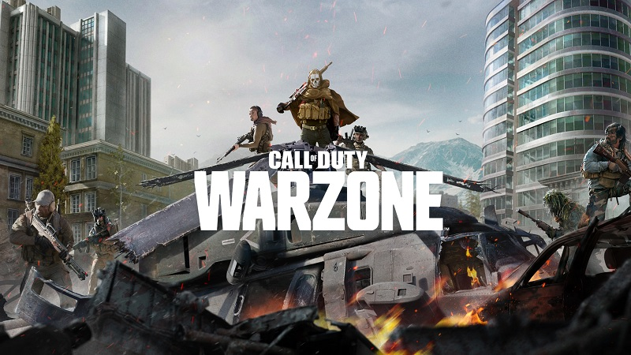

Warzone

Warzones es el modo Battle Royale de Call of Duty: Modern Warfare. Un modo de juego que nos permitirá caer en una isla con otros 150 jugadores para comprobar quién es el último que queda en pie. Además del clásico estilo Battle Royale, Warzone también incluirá un modo adicional llamado Plunder.